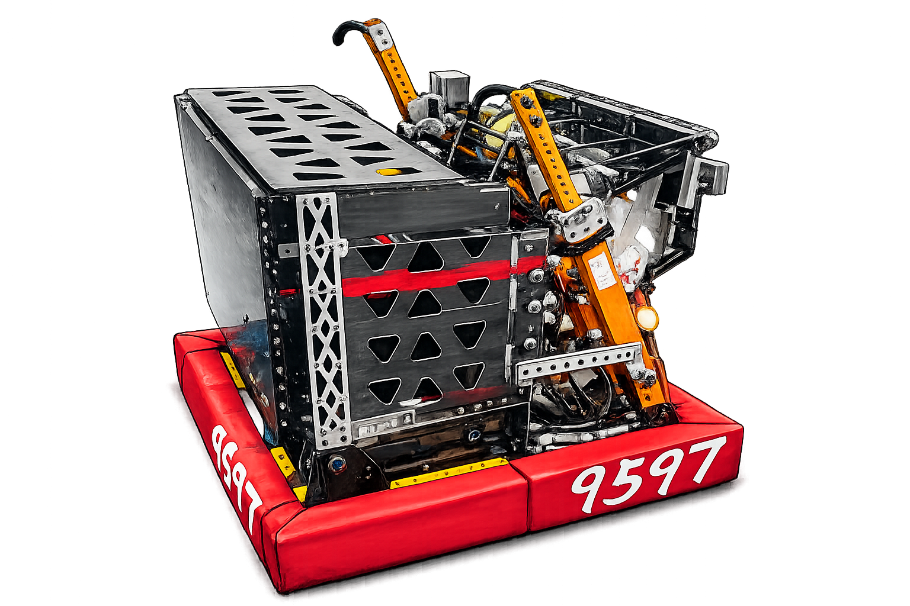

9597
Luban Robotics
Technical BinderDrive Train
The drive train is designed for stable movement, reliable field adaptability, and fast direction changes during defense and cycling. Using a structured chassis, durable lightweight materials, and modular swerve wheels, the robot can move smoothly while protecting wiring paths and keeping repairs quick between matches. Our focus is a stable, reliable, and efficient base that gives drivers confidence on every part of the field.


Column
The column guides game pieces upward into the scoring path. During testing, balls could get stuck near the X60 motor gap, so we added a front blocker and reshaped the side PC sheets to guide pieces toward the center. This created a smoother path, reduced interruptions, and helped increase throughput from 6 BPS to 13 BPS for faster scoring.
Feeder
The feeder uses a multi-lane roller system to move game pieces efficiently toward the launcher. Earlier PC separators created tight spacing where several balls could compress and jam. By opening the feeder path, game pieces can adjust naturally, which reduces compression, improves flexibility, keeps the structure strong, and makes the robot easier to maintain during competition.


Hopper And Hook
The hopper organizes game pieces before they enter the feeder, using a guided flow design to reduce friction and keep handling consistent. The hook is designed to hang the robot during the endgame. Its structure focuses on secure deployment, stable contact, and 100% accurate engagement so the robot can complete the hanging task confidently at the end of the match.
Intake
The intake subsystem is optimized for reliable ground pickup and fast cycling. We tested a three-roller version, but it added friction, complexity, and more failure points. The final two-roller method is simpler, lighter, and easier to tune. It moves game pieces at a faster pace while keeping the pickup method easy for students to maintain.


Auto-Aiming
Auto-aiming uses camera feedback, calibrated scoring parameters, and controlled launcher output to help the robot align with scoring targets. The system calculates position and angle from real-time field information, improving shooting consistency and supporting accurate scoring from different locations on the field.
Autonomous
Autonomous mode combines vision, odometry, and planned arc paths to let the robot move and score. The auto-locate system uses AprilTag markers, camera feedback, and motion data to correct drift, keep the robot aligned, and choose safe paths that support high scoring and strong alliance cooperation.